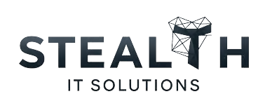

Giving Stealth IT one operating system before growth turns startup hustle into process debt.
Stealth IT Solutions is a new Florida MSP with three experienced co-founders, early customer traction, and no PSA in place today. The decision is less about replacing a broken system and more about choosing the operating backbone before Word docs, FreshBooks notes, and verbal sales tracking become the villain origin story.
A new Sarasota / Charlotte County MSP built by three operators with deep IT experience.
Business profile
Stealth IT serves small and mid-sized businesses across Bradenton, Sarasota, Venice, North Port, and Port Charlotte with managed IT, secure firewalls, switches, backups, and surveillance systems.
Founder context
The three co-founders each bring 15–20 years of IT experience, previously worked at the same MSP, and started the company earlier this year to build the business their way.
Early traction
Current momentum includes two law offices signed, a vet clinic close to signing, and a Port Charlotte school opportunity that could become the largest near-term project.
Source basis: Stealth IT Solutions website positioning plus the August 20 discovery call notes.
The team is reaching the exact point where a PSA becomes leverage instead of overhead.
Current process will not scale
Service tracking lives in FreshBooks notes and Word documents. Sales is tracked verbally and in shared Word docs. That works while the team is tiny — right up until customers and projects stack up.
Growth is accelerating
The Port Charlotte school engagement could include firewall refresh, workstation refresh, camera installation, and Office 365 setup, making project management and reporting more urgent.
All-in-one is the north star
James said the team wants to keep as many tools as possible under one roof, or at least as few places as possible, while keeping data flowing cleanly.
Decision window is near-term
The buying timeline is roughly two weeks, contingent on the school contract, with all three co-founders — James, John, and Kyle — needing to attend the demo and decide jointly.
Stealth IT is trying to avoid tool sprawl before it hardens into the business.
No PSA or ticketing system today
There is no formal service desk, ticketing workflow, or PSA source of truth. Service detail is captured through FreshBooks notes and documents rather than operational workflow.
Billing and collections pain
FreshBooks via Stripe is slow to fund, taking roughly 5–6 business days. The team also wants to pass merchant fees to customers and support stronger late-fee/collections automation.
Sales and quoting are manual
Leads are handled verbally and in Word docs on SharePoint, while proposals and invoices are built manually in FreshBooks. That creates risk as new clients and projects accelerate.
Automation matters early
Priority workflows include customer-initiated onboarding/offboarding through a portal and alert-driven ticket creation/closure from emails such as firewall internet up/down notifications.
Reporting must prove value
Stealth IT wants recurring automated reports that demonstrate ongoing value to customers and help prevent churn before it starts.
Kaseya bundle creates pressure
The Kaseya ops bundle is the primary competitor, but its all-or-nothing package creates tradeoffs around bundled pricing, onboarding cost, and whether Stealth IT actually wants every tool in the package.
The business case is about building the right operating model before volume forces a rebuild.
Accelerate cash flow
Rev.io Payments can shorten funding time, centralize payment history, support automated collections, and confirm payment recovery fee handling so billing does not become a startup bottleneck.
Replace manual admin early
Moving tickets, sales, quoting, agreements, projects, billing, and reporting into one platform prevents the team from scaling around Word docs, SharePoint files, and memory-based handoffs.
Support higher-value projects
Project management, workflows, inventory/field service capabilities, and reporting are especially relevant for the school project, camera installs, Office 365 management, and managed service agreements.
Give the Kaseya bundle a cleaner alternative
Rev.io can position as the modern PSA/payment/workflow core that integrates with Datto RMM, IT Glue, Pax8, TD Synnex, Ingram, Pac State, and later FreshBooks considerations without forcing an all-or-nothing bundle.
ROI is directional. Firm it up with client count, ticket volume, proposal volume, payment volume, average invoice size, school project scope, current Kaseya onboarding quote, and number of recurring reports/workflows needed.
What Rev.io must prove against Stealth IT’s current stack and buying criteria.
Operational workflows
- Ticketing, customer portal, onboarding/offboarding workflow automation, alert-driven ticketing, project management, agreements, profitability, and customer reporting
- Service agreement tiers with bundled remote support hours, overage billing, onsite rates, and emergency/after-hours rates
Systems to map
- Datto RMM
- IT Glue
- Pax8
- TD Synnex, Ingram Micro, Pac State, D&H in progress
- FreshBooks accounting / payment handoff, with no native FreshBooks integration today
Competitive validation
- Kaseya ops bundle comparison: Autotask, IT Glue, My IT Process, Kaseya Quote Manager, Connect Booster, Network Glue, My Glue
- Show where Rev.io replaces, where it integrates, and where password / network documentation still needs an IT Glue strategy
Pricing / commercial fit
Rev.io’s $1,000/month minimum, no setup fees, month-to-month structure, flexible mix of users/add-ons, and payment processing value need to be framed against Kaseya’s lower monthly price but meaningful onboarding cost.
Decision makers
James, John, and Kyle decide jointly. The Thursday 10 AM demo must include all three so questions around Kaseya, Datto, IT Glue, FreshBooks, payments, and project fit are resolved together.
Use the demo to prove Rev.io is the startup operating backbone, not just another app in the pile.
1. Confirm the full group
Connor sends the Thursday 10 AM placeholder invite and confirms John and Kyle are included, since Stealth IT makes software decisions jointly.
2. Send the demo agenda
Preview the agenda around agreement management, profitability reporting, sales/quoting automation, ticketing, workflows, project management, AI, billing, collections, and late fees.
3. Close the homework
Confirm payment recovery fee support, send the NinjaOne introduction email, and share Truist Park user conference details with the free ticket offer.
4. Tie decision to the school contract
Align the demo and pricing discussion to the Port Charlotte school decision, because that project is the clearest near-term forcing function for projects, Office 365, cameras, firewall work, and reporting.
Recommended next step: Thursday 10 AM demo with James, John, and Kyle focused on all-in-one workflows, Kaseya comparison, payment speed, project management, automation, reporting, and the two-week decision path.